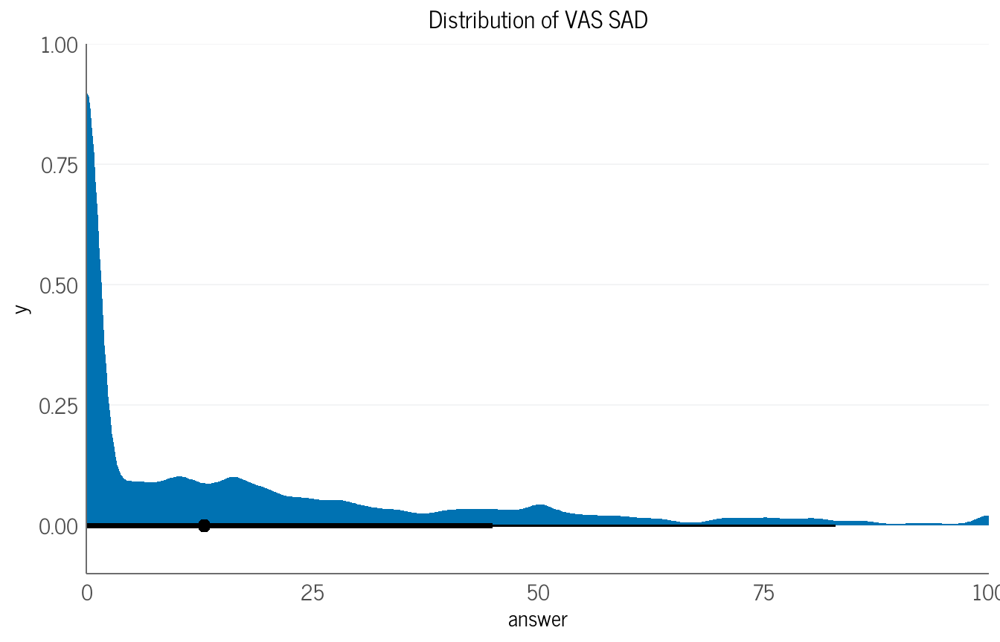

Show the code
library(tidyverse)
library(ggh4x)
library(here)
library(ggrain)
source(here("scripts", "00_functions.R"))Data Visualization for Cohen et al. Data
Björn S. Siepe ![]()
library(tidyverse)
library(ggh4x)
library(here)
library(ggrain)
source(here("scripts", "00_functions.R"))df_sensor <- read.csv(here("data", "survey_data.csv"))df_sensor |>
# filter resultidentifier for "likert" and "vas"
filter(grepl("likert|vas", resultidentifier)) |>
filter(surveyname != "Baseline") |> View()Proper formatting of numerical answers:
Visualize VAS sadness:
df_sensor |>
# filter resultidentifier for "likert" and "vas"
filter(grepl("likert|vas", resultidentifier)) |>
filter(surveyname != "Baseline") |>
filter(resultidentifier %in% "ema_vas_sad") |>
mutate(answer = as.numeric(answer)) |>
# create raincloud plot
ggplot(aes(x = answer)) +
ggdist::stat_slabinterval(fill = ggokabeito::palette_okabe_ito(c(5)))+
theme_bs()+
labs(title = "Distribution of VAS SAD")+
scale_x_continuous(limits = c(0,100), expand = c(0,0))+
scale_y_continuous(limits = c(-0.1,1), expand = c(0,0))+
theme(text = element_text(size = 29))
Likert items: